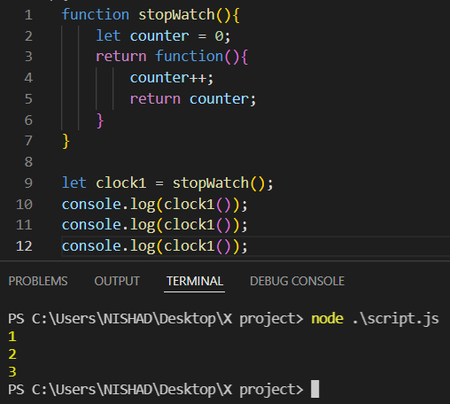

Closure
 এখানে clock1 কে log করলে , একটা annoymous function দেখায় । কারন এটা একটা function ,
এখানে clock1 কে log করলে , একটা annoymous function দেখায় । কারন এটা একটা function ,
এবং চাইলে এটাকে call করা যাবে ।
এতে করে আমারা 1 পাচ্ছি
২ বার call করাতে , প্রথম call এ 1 ২য় call এ 2 পাচ্ছি ।

এবং ৩ বার call করলে একই function কিন্তু 3 পাচ্ছি ।
এর কারন হচ্ছে , এখনে 10nl থেকে যখন call করার ফলে clock1 এর ভেতর যেহেতু একটা function stored আছে সেহেতু
সেটা call হয়
2nl এর counter এর মান 0 সেট করে ।
তারপরে counter এর Reference সহ 3nl এর function কে return করছে । অর্থাৎ এটার একটা Reference থাকছে , যেটাকে সে পাঠায় দিচ্ছে
তারপর থেকে যতবার call করে সেটাকে এক এক করে বারাতেই থকে ।
closure main part started
জতবার stopWatch কে কল করছি সে, নিজস্ব একটা closure তৈরি করতেছে ।
মানে প্রথমবার যে কাজ করছে সেটার Reference সে রেখে দিচ্ছে clock1 এর মধ্যে ।
এখন একটা পরে যখন আবার clock2 এর সাহায্যে call করেছি সে আবার নতুন করে counter এর মান সেট করেছে এবং ,
সেটা 1 থেকে শুরু হয়েছে । কারন এখনে Reference টা শুধু মাত্র clock1 এর জন্যই তৈরি হয়েছে ।
কখনো কখনো interViwe তে closure related প্রশ্ন জিজ্ঞাসা করতে পারে
সে ক্ষেত্রে perfact answer হবে , যে ।
যদি কোন একটা function এর ভেতরে কোন একটা function use করি , বা retur করি এবং parent fucntion যদি outSide এর কোন variable কে access করে
তাহলে টার নিজস্ব একটা Encapsulation , closure , private variable diclare করে ফেলে ।
এবং বাহির থেকে যত গুলা variable এর মধ্যে store করা হবে প্রত্ত্যেকের জন্যই আলাদা আলাদা Reference তৈরি করবে ।
(তাই counter কে বাহির থেকে পাওয়া যাবেনা । )
shortCut:- একটা function থেকে আর একটা function কে return করি , তাহলে তারা নিজস্ব একটা Encapsulation তৈরি হবে বা একটা privete Reference তৈরি করে । .